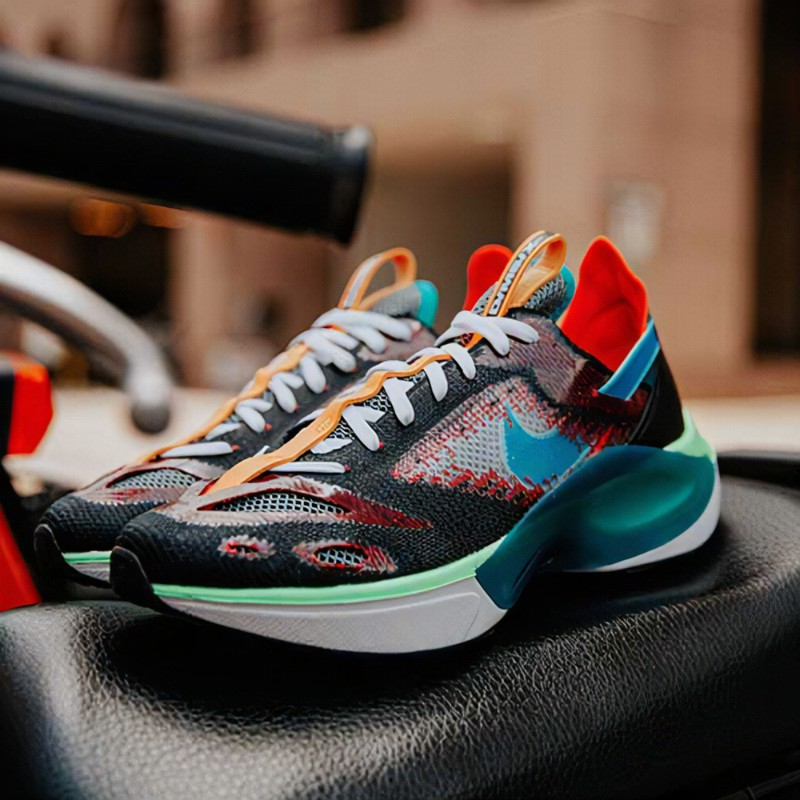

Welcome to our store.
Sportscene is the name of a range of Scottish sports television programmes produced by BBC Scotland . Sportscene' s predecessors were Sports Special from Scotland and Sportsreel, which was broadcast every Saturday at around 5pm (results and reports) and 10pm (highlights) in the 1950s and 1960s.
Below you'll find what we have on sale for you today
All men sizes are available.
Nike Shorts now on sale.
Stock availibility:45

Black Jordan T-shirt now on sale.
Stock availibility:50

Nike Tempo now on sale.
All men sizes are available
Stock availibility:50
